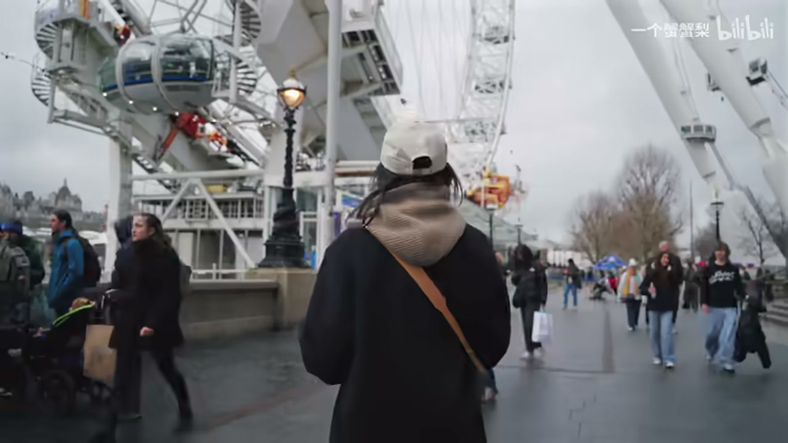
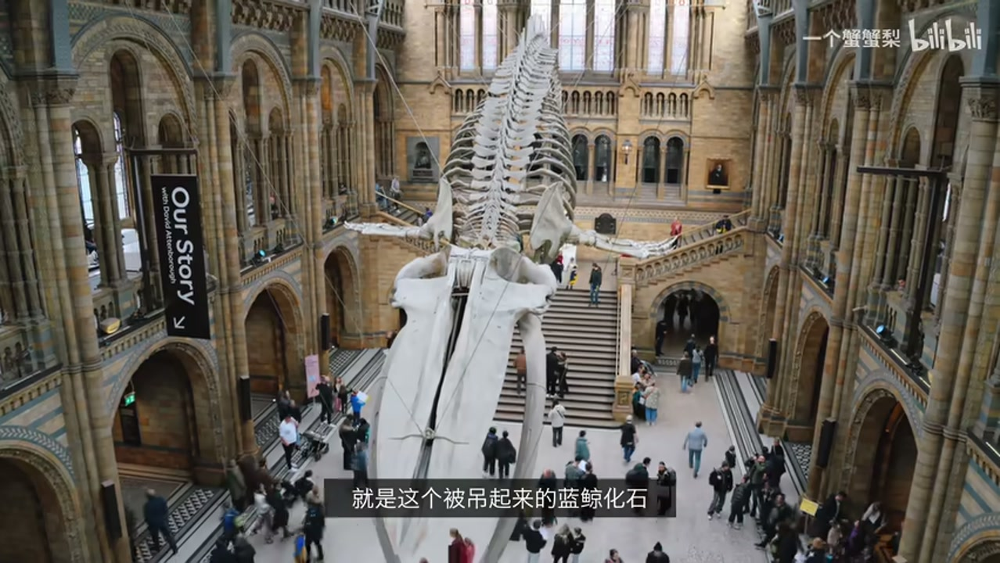
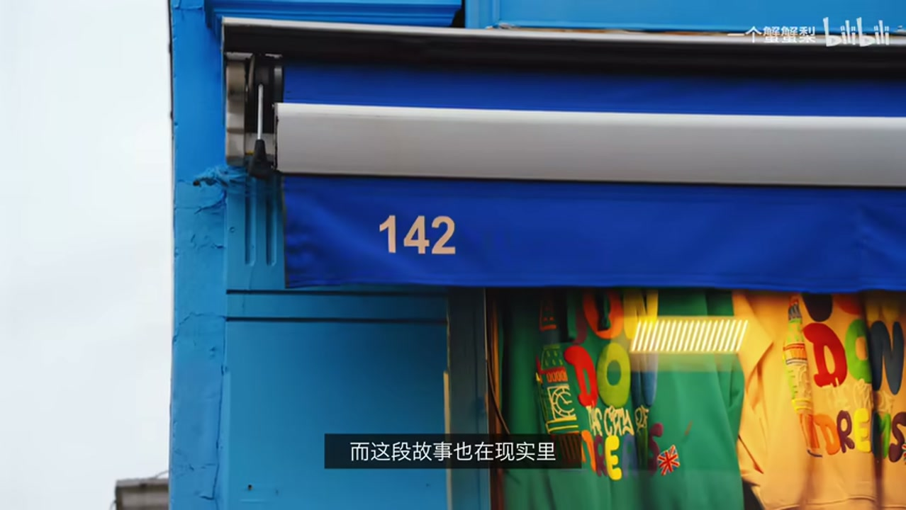
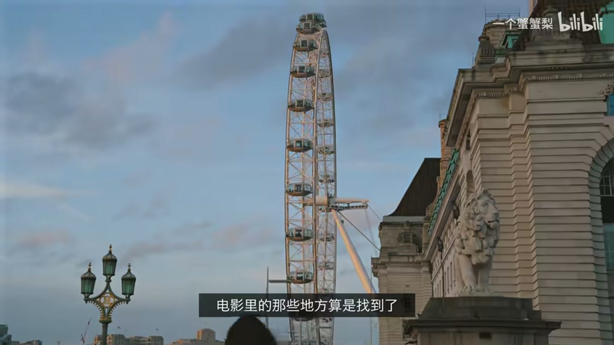

01
中文
伦敦有一只非常著名的小熊，就是帕丁顿熊。
EN
There's a famous little bear in London, Paddington Bear.
表达提示开场介绍：There's a…（比 There is 更口语），famous little bear（little 增加亲切感，不是 small）
Scene English · 伦敦旅行 Vlog
Crab Encounter London — A Movie-Map Travelogue
Opening: The Paddington Metaphor
情境博主开场用帕丁顿熊的故事比喻自己远道而来——带着设备而非果酱，借「请照顾这只熊」的台词引出「请照顾这只蟹」的幽默。语域：温馨叙事，带自嘲幽默。
伦敦有一只非常著名的小熊，就是帕丁顿熊。
There's a famous little bear in London, Paddington Bear.
表达提示开场介绍：There's a…（比 There is 更口语），famous little bear（little 增加亲切感，不是 small）
他是从很远的秘鲁坐船过来的。
He came all the way from Peru by boat.
表达提示大老远过来 → all the way from…（强调距离之远，口语高频）；坐船 → by boat
我觉得我跟他特别的像，也是从大老远的地方坐飞机过来的。
I feel like I'm a lot like him, I also came from far away, but by plane.
表达提示很像他 → a lot like him（比 very similar to 更自然）；大老远 → far away（不必直译 big old far）
但我大概不是果酱，带的是一箱子的设备。
Instead of marmalade, I brought a suitcase full of gear.
表达提示果酱 → marmalade（英式橙皮果酱，帕丁顿熊最爱，不是 jam）；一箱 → a suitcase full of；设备 → gear（泛指拍摄设备）
帕丁顿来到伦敦时，脖子上挂着一张写着「请照顾好这只熊」的纸条。
When Paddington arrived in London, he had a tag around his neck that said "please look after this bear."
表达提示纸条 → tag（行李牌/标签，不是 note/paper）；照顾 → look after（英式表达，比 take care of 更常用）；脖子上挂着 → had a tag around his neck
第一次来到伦敦的我也想借用一下这句话：请照顾好这只蟹。
As a first-timer in London, I'd like to borrow that line: please look after this crab.
表达提示第一次来的人 → first-timer（口语名词）；借用这句话 → borrow that line（比 use that sentence 更自然）
在真正站在这里之前，我对伦敦的认识其实还蛮零碎的。
Before standing here, my knowledge of London was pretty scattered.
表达提示零碎的 → scattered（比 fragmented/piecemeal 更口语）；蛮…的 → pretty…（口语缓冲词）
大本钟、阴晴不定的天气，还有电影里那些似曾相识的街道。
Big Ben, unpredictable weather, and streets that felt familiar from movies.
表达提示阴晴不定 → unpredictable（不是 cloudy-sunny）；似曾相识 → felt familiar from…（feel familiar 更地道，比 looked familiar 更主观）
所以这一次我想认真当一回游客，也想看看那些电影里的地方现实中到底是什么样的。
So this time I want to be a proper tourist and see what those movie locations actually look like in real life.
表达提示认真当游客 → proper tourist（proper = 货真价实的、合格的）；电影取景地 → movie locations；现实中 → in real life
欢迎收看本期的邂逅时间——伦敦。
Welcome to this episode of Encounter Time, London.
表达提示本期 → this episode（视频/vlog 专用）；邂逅 → encounter（通识词，比 chance meeting 简洁）
大老远过来 → all the way from Peru. / all the way over from China. / from as far away as...
带着设备而非果酱 → Instead of marmalade, I brought a suitcase full of gear.
借用这句话 → borrow that line / steal that line / let me quote that
认真当一回游客 → be a proper tourist / do the whole tourist thing / play tourist for real
First Impressions: Big Ben & Weather
情境落地伦敦站在大本钟前，吐槽阴雨绵绵的伦敦典型天气，随口科普伦敦年降雨量不如上海。语域：Vlog 即兴口播，轻松吐槽风格。
家人们到伦敦了！
Hey guys, we made it to London.
表达提示到了 → made it（比 arrived 更口语，含「终于到了」的成就感）；家人们 → guys（Vlog 通用称呼，不是 family members）
既然是第一次来，那有些游客作业总还是要交一下的。后面是大本钟。
Since it's my first time, I gotta do the obligatory tourist stuff. Big Ben is right behind me.
表达提示游客作业 → obligatory tourist stuff（obligatory = 必须打卡的，比 must-do 更具体）；就在后面 → right behind me（right 强调方位）
但今天一到伦敦这个天气就非常典型，特别的伦敦——阴雨绵绵的。
But the weather today is just so typical, so London, drizzly and grey.
表达提示特别伦敦 → so London（名词当形容词用，地道口语）；阴雨绵绵 → drizzly and grey（drizzle = 毛毛雨）
但是据说其实伦敦全年的降雨量没有上海多，这个你改心。
Apparently London's annual rainfall is actually less than Shanghai's, let that sink in.
表达提示全年降雨量 → annual rainfall；你想想 → let that sink in（「细品一下」的高频说法，比 think about it 更有冲击力）
主要是它每次都是下一点点毛毛雨。可能这就是为什么经常看到伦敦人下雨天不打伞的原因吧。
It's mainly because it's always just a light drizzle. Maybe that's why you often see Londoners not bothering with umbrellas.
表达提示毛毛雨 → light drizzle；懒得打伞 → not bothering with umbrellas（bother = 费那个劲、麻烦，比 don't use umbrellas 更传神）
到了某地 → We made it to London! / We're here! / Touchdown London!
必须打卡的游客项目 → the obligatory tourist stuff / the must-do tourist checklist / the standard tourist routine
典型伦敦天气 → so typical, so London / classic London / peak London / couldn't be more London

COVID Memorial Wall
情境路过满是爱心的墙，发现每一颗爱心代表一位新冠逝者。语气从轻松转为沉静。语域：短暂停驻的观察，语气克制。
我后面这个墙上全都是爱心。
The wall behind me is covered in hearts.
表达提示全是爱心 → covered in hearts（covered in = 被…覆盖，比 full of 更有画面感）
但这里每颗爱心都代表一位新冠逝者。
But each heart here represents someone who passed away from COVID.
表达提示代表 → represents（不是 means）；逝者 → someone who passed away（passed away 比 died 更委婉）
墙上全是… → covered in hearts / plastered with hearts / full of hearts
因新冠去世 → passed away from COVID / died of COVID / lost their life to COVID
First Meal: Fish & Chips & Chinese
情境炸鱼薯条仪式感打卡，但中国胃不买账，转头去吃西安肉夹馍，感叹中餐出国后价格涨了但魅力不减。语域：Vlog 美食记录，带吐槽幽默。
落地伦敦的第一顿当然要吃炸鱼薯条了。
For my first meal in London, fish and chips was a no-brainer.
表达提示落地第一顿 → first meal in London；理所当然的选择 → a no-brainer（比 an obvious choice 更口语）
我们找到一家从1988年开到现在、号称英国顶尖的老店。
We found a place that's been around since 1988, supposedly one of the best in the UK.
表达提示开到现在 → been around since（比 been open since 更口语）；号称 → supposedly（暗示「据说是，但不确定」）
还碰到一个当地人跟我们说这是伦敦最好吃的炸鱼薯条。
Even ran into a local who told us it's the best fish and chips in London.
表达提示碰到某人 → ran into（偶遇，比 met 更口语）；当地人 → a local（名词，非常常用）
最好吃不敢说，但伦敦第一顿的仪式感算是有了。
Can't say if it's the best, but at least we got that first-meal-in-London ritual out of the way.
表达提示不敢说 → can't say if…（比 I'm not sure 更口语）；仪式感有了 → got that ritual out of the way（解除仪式负担，比 completed the ritual 更地道）
仪式归仪式，但中国胃是不一样的。所以我们来了一家从某个年代开到现在的老店。
Rituals aside, a Chinese stomach is a different story. So we came to this long-standing spot.
表达提示仪式归仪式 → rituals aside（aside = 暂且不论）；中国胃 → a Chinese stomach（直译即可，英语完全理解这个文化概念）；是另一回事 → is a different story
来看看这个西安的肉夹馍，折算下来一百多块钱一份。
Check out this Xi'an-style roujiamo, works out to over a hundred yuan each.
表达提示换来 → check out（Vlog 展示用语）；折算下来 → works out to（换算/结果，高频口语）
中餐出了国，价格是涨了，魅力倒是一点没打折。
Chinese food abroad, the price goes up, but the appeal doesn't drop one bit.
表达提示魅力 → appeal（比 charm 更中性，适用于食物）；一点没打折扣 → doesn't drop one bit（口语强调，比 doesn't decrease at all 更有力）
理所当然的选择 → a no-brainer / an obvious choice / goes without saying
仪式感完成了 → got that ritual out of the way / checked that box / ticked that off the list
中餐出国：价格涨了魅力不减 → the price goes up, but the appeal doesn't drop one bit / still just as good / every bit as tempting
折算下来 → works out to / comes to / adds up to / that's about
Bar with a View
情境没预约却意外坐到全场景观位，体验感拉满——账单也一样。语域：Vlog 即兴分享，带反差幽默。
伦敦还有一家挺有名的酒吧，但是我没有预约，最后只能坐在了吧台位。
There's this pretty famous bar in London, but I didn't have a reservation, so I ended up at the counter.
表达提示挺有名的 → pretty famous（pretty 作副词 = 相当）；最后只能 → ended up at（结果落在了，口语高频）
但是没有想到这个临时的座位真的是全场景佳的景观位。
But who would've thought, this last-minute seat turned out to be the best view in the whole place.
表达提示没想到 → who would've thought（修辞反问，比 surprisingly 更口语）；临时座位 → last-minute seat；竟然是 → turned out to be
怎么样，体验感拉满吧？不过账单也一样。
Pretty amazing experience, right? Though the bill was just as impressive.
表达提示体验感拉满 → amazing experience（比 off the charts 更简洁）；账单也一样 → the bill was just as impressive（just as = 和体验一样令人印象深刻）
结果却坐了吧台 → I ended up at the counter / I wound up at the bar / I had to settle for the bar seat
没想到却是最佳位置 → who would've thought it turned out to be the best view / turns out / surprisingly enough
体验感拉满 → a top-tier experience / the experience was off the charts / couldn't have asked for more

Natural History Museum
情境拿电影当旅行地图，来到帕丁顿熊差点被做成标本的自然历史博物馆，看蓝鲸化石和动物标本。语域：旅行 Vlog 讲解，带惊叹。
虽然伦敦是第一次来，但有些画面早就在电影里面见过了。
Even though it's my first time in London, some of these scenes I've already seen in movies.
表达提示画面 → scenes（不是 pictures/images）；在电影里见过 → seen in movies（最简单直接）
比如眼前的这个帕丁顿车站，是不是还挺熟悉的？
Like Paddington Station right here, does it look familiar?
表达提示是不是挺眼熟 → does it look familiar?（口语反问，比 don't you recognize it 更自然）
今天我们就拿电影当地图，看看银幕外的伦敦。
Today we're using movies as our map to see London beyond the screen.
表达提示拿电影当地图 → using movies as our map（as = 当作）；银幕外 → beyond the screen（比 outside the movie 更优雅）
跟随着帕丁顿熊的足迹，我来到了英国的自然历史博物馆，这里就是帕丁顿熊差点被抓起做成标本的地方。
Following Paddington's footsteps, I ended up at the Natural History Museum, the very place where Paddington was almost turned into a stuffed specimen.
表达提示足迹 → footsteps；正是那个地方 → the very place where（very 表示强调=正是）；做成标本 → turned into a stuffed specimen
哇这里真的好壮观！挑高非常的高，像一个城堡一样。
Wow this place is absolutely stunning, the ceiling is so high, it's like a castle.
表达提示壮观 → stunning（比 magnificent 更口语）；挑高 → the ceiling is so high（ceiling = 天花板高度即挑高）；像城堡 → like a castle
这个大厅里面最值得看的就是这个被吊起来的蓝鲸化石。
The main thing to see in this hall is the blue whale skeleton hanging from the ceiling.
表达提示最值得看 → the main thing to see（比 the most worth seeing 更自然）；蓝鲸化石 → blue whale skeleton；吊起来 → hanging from the ceiling
它整个动作就是一个向下俯冲捕食的动作，我感觉站在它下面特别的小。
It's posed mid-dive, like it's swooping down to catch prey. I feel so tiny standing underneath it.
表达提示定格在俯冲动作 → posed mid-dive（mid- = 在半空中/过程中）；俯冲捕食 → swooping down to catch prey；特别小 → so tiny（比 very small 更有冲击力）
这些化石看着确实挺震撼的，但这里还有很多动物标本，真的每一只都栩栩如生。
The fossils are genuinely impressive, but there are also loads of animal specimens here, every single one looks so lifelike.
表达提示震撼 → genuinely impressive（genuinely = 真的，不是夸张）；很多 → loads of（英式口语，比 many 更自然）；栩栩如生 → lifelike（比 vivid 更贴标本语境）
能近距离看到这么多难得一见的标本，确实挺厉害的。
Getting to see so many rare specimens up close is pretty amazing.
表达提示近距离 → up close（比 at a close distance 更简洁）；难得一见的 → rare（比 hard to see 更简洁）
只是关于它们生前的故事咱就不了解了。希望它们都是在生命结束以后才以这种方式被留在这里的。
Though I don't really know the stories of how they lived. I just hope they ended up here after their lives ran their natural course.
表达提示生前故事 → the stories of how they lived；生命自然终结后 → after their lives ran their natural course（委婉表达「不是被杀死做标本」，比 after a natural death 更优美）
银幕外 → beyond the screen / off-screen / the real thing / in real life
跟随某人的足迹 → following someone's footsteps / retracing someone's steps / walking in someone's path
特别小 → so tiny / feel dwarfed / feel puny / feel so small
栩栩如生 → lifelike / so realistic / true to life / uncannily real

Notting Hill & the Bookshop
情境博主探访《诺丁山》电影取景地：142号其实是纪念品店，真正的灵感来源是一家从未拍过电影的书店。语域：电影冷知识 + 旅行观察，娓娓道来。
不知道有多少人是先看了《诺丁山》，后来才知道伦敦真的有这个地方叫诺丁山。
I wonder how many people watched Notting Hill first and only later found out it's an actual place in London.
表达提示不知道有多少人 → I wonder how many people…（wonder = 好奇/想知道）；后来才知道 → only later found out（found out = 发现/得知）
电影里那间小小的旅行书店，也成了很多人记住这里的原因。
That tiny travel bookshop in the movie is what made this place stick in so many people's minds.
表达提示旅行书店 → travel bookshop（不是 travel bookstore，英式用法）；记住这里 → stick in people's minds（stick = 留在记忆里，比 remember 更形象）
这就是电影中男女主角相遇的142号店，但实际上它并不是一家书店，而是一个纪念品商店。
This is number 142, where the leads meet in the film, but it's not actually a bookshop, it's a souvenir store.
表达提示男女主角 → the leads（主演的简称，比 the main characters 更专业）；纪念品商店 → souvenir store
实际上电影中书店的灵感是来自有生活的这家书店，但有意思的是这里其实也没有真的拍过电影。剧组只是照着当时的书店在摄影棚里重新搭了一间。
The real-life inspiration for the bookshop was actually this other bookstore, but funnily enough, they never filmed there either. The crew just built a replica of it on a soundstage.
表达提示灵感来源 → the real-life inspiration；有意思的是 → funnily enough（英式口语）；照原样搭了一间 → built a replica；摄影棚 → on a soundstage
你看电影不一定是真的，但它确实能让一条街变成让全世界人都来打卡的地方——这个倒是真的。
Movies may not be real, but they can definitely turn a street into a place people from all over the world come to check out, that part is very real.
表达提示打卡 → come to check out（比 take photos 更贴旅行打卡含义）；这个倒是真的 → that part is very real（精妙转折，呼应前句的 not real）
后来才发现 → only later found out / it wasn't until later that I realized / only discovered afterwards
留在记忆里 → stick in someone's mind / make an impression / leave a mark / be etched in memory
有意思的是 → funnily enough / ironically / the funny thing is / here's the twist
Savile Row & Kingsman
情境探访伦敦裁缝街 Savile Row，Kingsman 电影灵感诞生地——1849 年开的百年西装店。偷拍被默许，发现普通西装两千多镑一件。语域：Vlog 探店 + 电影花絮。
这里就是伦敦的裁缝街，有的店铺已经开了几百年了。
This is Savile Row, some of these shops have been around for centuries.
表达提示裁缝街 → Savile Row（专有名词，不用翻译）；开了几百年 → been around for centuries（been around = 一直存在）
听说这边一套定制西装要几千英镑，要等六个星期。
I heard a bespoke suit here costs a few thousand pounds and takes six weeks.
表达提示定制西装 → bespoke suit（bespoke = 量身定做，英式核心词汇，不是 custom-made）；几千英镑 → a few thousand pounds（pounds 不要省略）
不过让这条街出圈的不只是西装，而是一部叫 Kingsman 的电影。
But what really put this street on the map wasn't just the suits, it was a movie called Kingsman.
表达提示出圈/出名 → put this street on the map（经典习语，比 make it famous 更地道）
你看这写的 Kingsman。这家店是1849年的时候开的。
See it says Kingsman right here. This shop first opened in 1849.
表达提示你看 → See（Vlog 引导观众看画面）；这写着 → it says… right here（right here 强调当前画面）
据说当时《王牌特工》的导演就是在这里量体裁衣的时候突然来了灵感，于是就拍了这部电影。
Apparently the director of Kingsman was here getting fitted when inspiration struck, and that's how the movie was born.
表达提示量体裁衣 → getting fitted（西装量体的固定说法）；突然来了灵感 → inspiration struck（strike = 突然降临，比 got inspiration 更生动）
来看看这件西装的价格。好贵，两万多。
Let's take a look at the price of this suit. So expensive, over twenty thousand.
表达提示来看看 → let's take a look at（Vlog 引导句式）；好贵 → so expensive（夸张脱口而出，比 very expensive 更口语）
走进去之后才发现它们写了不让我们拍摄，但我还是偷偷摸摸拍了一点。好像也没有制止我，整个偷感非常重。
After walking in, I noticed a sign saying no filming, but I still snuck in a few shots. They didn't seem to stop me either, so the whole thing felt super sneaky.
表达提示写着不让拍 → a sign saying no filming；偷偷摸摸拍了 → snuck in a few shots（snuck = sneak 过去式，偷偷做）；偷感重 → super sneaky（sneaky = 鬼鬼祟祟的）
我悄悄看了一下，它里面的衣服价格还蛮高的，要两千多磅一件。就是普通黑色的西装，可能只是我看不出它的特别之处。
I took a quiet look, the prices inside are pretty steep, over two thousand pounds a piece. It was just a plain black suit, maybe I just can't tell what makes it special.
表达提示价格蛮高 → pretty steep（steep = 价格高得吓人）；一件 → a piece（服装量词）；看不出特别之处 → can't tell what makes it special（比 can't see why it's special 更自然）
不过这地方特别有名，像很多英国的政要，比如丘吉尔、威廉王子，都在这边定制过西装。
But this place is seriously famous, loads of British figures like Churchill and Prince William have had suits made here.
表达提示政要 → British figures（figures = 重要人物，比 politicians 更宽泛）；定制过西装 → have had suits made here（have something done 句型，意为让别人给自己做）
让这里出名 → put this street on the map / made this street famous / put this street in the spotlight
突然来了灵感 → inspiration struck / he got the idea / a lightbulb went off / it hit him
偷偷拍了 → snuck in a few shots / secretly filmed a bit / got some sneaky footage / stole a few clips
价格很高 → pretty steep / pretty pricey / on the expensive side / not cheap at all

Final Day: Sunny London
情境离开伦敦那天终于放晴了，阳光下的伦敦像换了一座城市。临别感言——电影里的地方找到了，电影之外的伦敦还得再来几次。语域：临别收尾，温暖克制。
在伦敦的这几天，雨就没怎么停过，但到了最后一天——哎，天晴了。
The rain barely let up during my days in London, but on the final day, hey, the sun came out.
表达提示没怎么停过 → barely let up（let up = 减弱/停止，高频天气表达）；天晴了 → the sun came out（比 it stopped raining 更有画面感）
大本钟还是那个大本钟，可太阳一出来，看起来就像换了一座城市。
Big Ben is still Big Ben, but when the sun comes out, it feels like a whole different city.
表达提示还是那个大本钟 → Big Ben is still Big Ben（修辞重复，不变的是标志建筑）；像换了个城市 → a whole different city（whole = 完全，强调反差之大）
至于伦敦到底是什么样，我第一次来确实说不太清。
As for what London is really like, honestly, I can't quite put my finger on it after just one visit.
表达提示说不太清 → can't quite put my finger on it（经典习语 = 无法准确描述/指出，比 can't describe it 更地道）
电影里的那些地方算是找到了，但电影之外的伦敦可能还得再来几次。
I managed to find all those movie locations, but the London beyond the movies? Might take a few more trips.
表达提示总算找到了 → managed to find（managed to = 经过努力做到了）；电影之外的伦敦 → the London beyond the movies（beyond 呼应开头的 beyond the screen）；还得再来 → might take a few more trips
当然也欢迎屏幕前的你来分享一下，你眼中的伦敦是什么样子。
And of course, I'd love for you guys to share, what does London look like through your eyes?
表达提示欢迎你分享 → I'd love for you guys to share（Vlog 结尾互动句）；你眼中 → through your eyes（比 in your opinion 更形象诗意）
雨没停过 → barely let up / hardly stopped / almost never let up / was pretty much nonstop
说不太清 → can't quite put my finger on it / can't really pin it down / hard to sum up
总算做到了 → managed to find / was able to track down / did get to see / checked off
用「made it / all the way from」表达「终于到了、从很远的地方来」
用「ended up at… / turned out to be…」表达意料之外的结果
用「put… on the map」表达「让某地出名」
用「can't quite put my finger on it」表达「说不清楚、无法准确描述」
arrive 后接 in（大城市）或 at（小地点），口语直接用 made it to 或 got to 更自然。
let up 是天气表达的核心动词词组，表示「减弱、停止」，barely let up = 几乎没停过。
put… on the map 是使某地出名的经典习语，不要直译成 become famous。
inspiration strikes 是「灵感突然降临」的固定搭配，strike 暗示突然性。